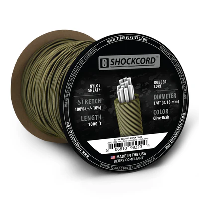

Why We Teamed Up
Grit Gear HQ exists for one reason: to cut the guesswork. We test cheap, we test fancy, and we keep what still works when the weather or the world stops cooperating. For cordage and small-format field gear, we kept running into the same reality—there’s “paracord,” and then there’s cord you can bet a shelter, splint, or tow line on. TITAN Survival lives in the second category. Their lines tie clean, resist rot and UV, and they don’t turn into fuzzy yarn after an afternoon scraping over bark and rock. When we started swapping notes with their team (combat-veteran owned and operated), a partnership made sense.
What Makes SurvivorCord® Different
A lot of “550” paracord on the market is wishful thinking. Weak inner yarns, uneven sheath, mystery fibers—fine for crafts, not for fieldcraft. SurvivorCord® starts with true seven-strand paracord, then integrates survival threads: functional tinder, fishing line, and multi-use metallic wire or monofilament depending on variant. That means one hank of cord can lash your tarp and give you ignition material and line without digging for another pouch.
The sheath is tight and consistent enough that knots dress properly and actually hold. Trucker’s hitch, evenk, taut-line, alpine butterfly—pick your poison. When you’re cold and wearing gloves, consistency matters more than specs on a label.
- Strength you can plan around: real 550-class working strength and better abrasion resistance than the craft-store stuff.
- Multi-role core: pull a strand to improvise gear repairs, snares, trip lines, or fire starting.
- Weather tolerance: less water uptake, better UV resistance, and smoother handling in the cold.
Field Notes: Where Good Cord Saves the Day
On a three-day lake loop last fall, the forecast lied. Winds kicked to 30+, temps dropped, and the pines started throwing pinecones like rocks. Cheap cord on another crew’s ridge line started glazing and slipping. Ours—TITAN—didn’t. We tightened the ridgeline once, added two prusiks to tension a windward flap, and went to work boiling water. That’s the whole review: no drama, just shelter.
A month later we repurposed the same line to drag a log off a two-track after a storm. Two timber hitches and a slow pull got it done. Good cordage isn’t sexy, which is why it’s perfect. It lets the rest of the day be about the mission, not the micro-failures.
Boot Laces That Pull Double Duty
We’ve all had laces pop at the worst moment: wet, cold, late. TITAN’s boot-lace kits wrap the same “buy once” logic into a small package: abrasion-resistant lace, plus a micro ferro rod and striker that live on your footwear. Fire follows you around. Your feet are already weight you carry; make that weight work. If your EDC ever gets stripped down to the bare minimum, a spark on your boots plus a tinder thread in your cord can still get a flame going.
Shock Cord: The Silent MVP
If paracord is your knife, shock cord is your spring clamp. Lash wet clothes to a pack, secure a radio to a chest rig, tame cable spaghetti, anchor a tarp that needs to breath in gusts—elastic buys you forgiveness and speed. TITAN’s shock cord is consistent in stretch and recovery. It bites knots better than bargain rubber, and it doesn’t crumble to dust after a summer in the sun.
Pro tip: cut two 30-inch lengths, tie loops in the ends, and keep them on your shoulder straps. They anchor trekking poles, paddles, or a jacket in seconds. It’s the small, repeatable time saves that stack into a better day.
 Shock cord that lastsPacks, Pouches, and the Stitching That Matters
There’s a reason the internet is full of “ruck fail” threads: seams take the load, and cheap thread plus long, loose stitches will let you down. TITAN’s bags and IFAK pouches use sane patterns, bar-tacks at stress points, and zippers we haven’t blown up yet (which is saying something). The GH35 24-hour pack hits the sweet spot for day missions and “truck to trailhead” work: enough capacity for water, layers, chow, and med, without feeling like you’re wearing a couch.
On the soft-goods side, we also appreciate the sensible patterns in apparel and accessories. A shemagh isn’t fashion in the field; it’s shade, filtration, a towel, an arm sling, a modesty panel, and a backup coffee filter. Make it once, make it right, use it for a decade.
How to Save (and Support Veterans While You Do)
- Open the collab page in a new tab: www.titansurvival.com/GRITGEARHQ.
- Add your cordage or kit to cart like normal.
- At checkout, enter code GRITGEARHQ in the discount field and apply.
You get reliable gear and a break on the price. A portion of your purchase helps fund national Veteran’s charities through TITAN’s long-standing commitment. That’s a trade we’re proud to stand behind.
What to Carry: A Simple Cordage Loadout
You don’t need to carry a moving truck. You do need strong, versatile lines. Here’s our baseline kit for a daypack or overnighter:
- 50–100 ft SurvivorCord®: ridgeline, shelter, repairs, and all the little jobs you didn’t plan.
- 20–30 ft shock cord: lashing with forgiveness; tarp anchors that flex instead of shred grommets.
- Two pre-tied prusik loops + two carabiners: instant tarp adjustments, clothesline tensioning, and quick fix tie-offs.
- Boot-lace kit with ferro rod: fire stays attached to you even when pockets change.
- Canvas cord bag: keeps the spaghetti under control and ready for one-hand deployment.
Add a few of your favorite knots—trucker’s hitch for mechanical advantage, taut-line for adjustable guy lines, and alpine butterfly for mid-line loops—and you can build almost anything you need with a handful of parts.
Quick FAQ
Is SurvivorCord® overkill for casual camping?
No. It behaves like great paracord on easy trips and quietly saves the day on hard ones. “Overkill” is just reserve capacity you didn’t need this time.
Why not buy bargain 550 and replace it when it fails?
Because it often fails when you’re cold, wet, and out of time. Re-buying junk is also the expensive path. Buy once, sigh less.
Will the discount code work on everything?
Use GRITGEARHQ at checkout. Site-wide promos can change, but the link and code route you through the correct offer stack when available.
Our Bottom Line
Grit is more than attitude; it’s systems. Systems are built from parts that do their job without constant babysitting. Good cordage, good stitching, good elastic—these aren’t glamorous purchases, they’re the quiet backbone that lets you focus on the people, the land, and the objective. That’s why we’re comfortable flying our flag next to TITAN’s. If you see Grit Gear HQ attached to a brand, it means we’d hand that item to a friend and sleep fine.